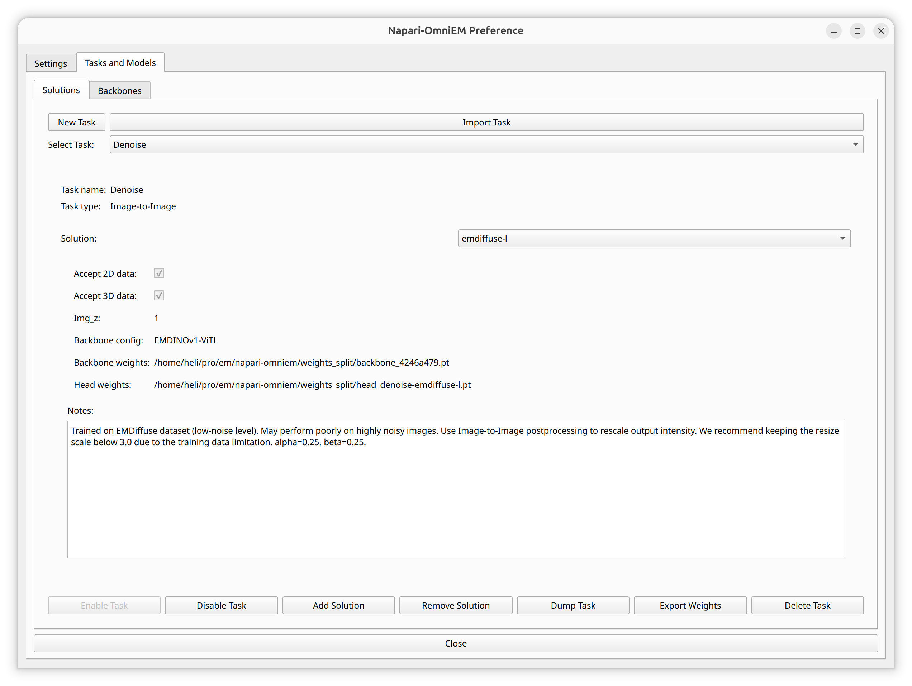
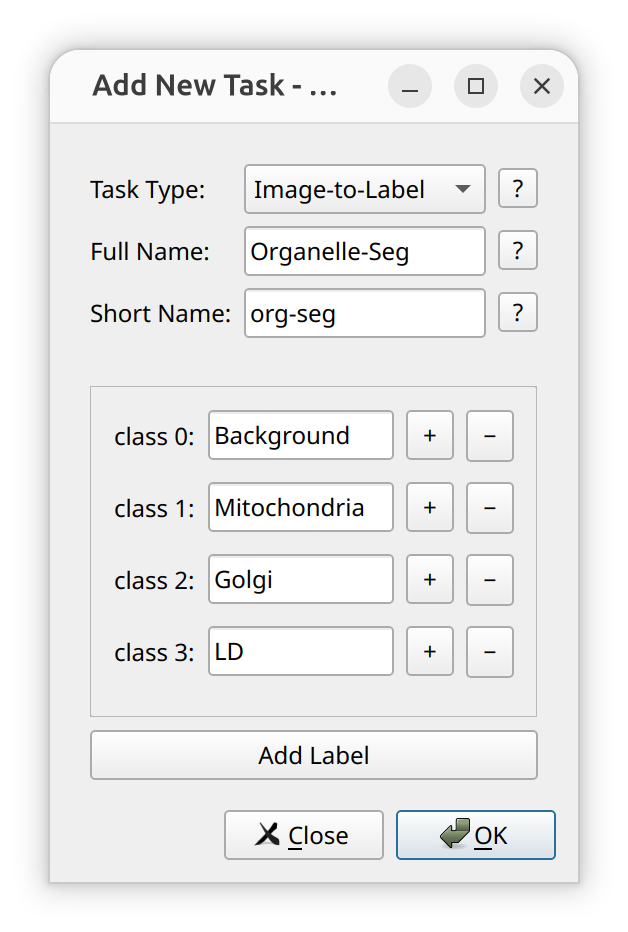
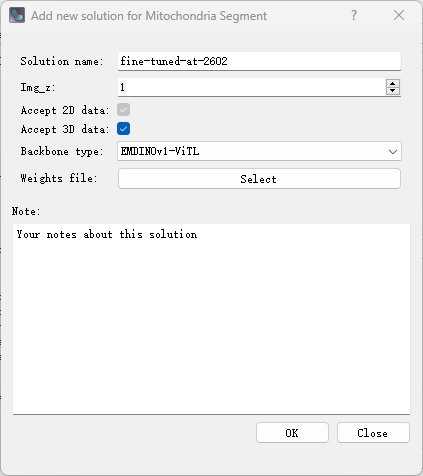

Task and Solution Management
Napari-OmniEM allows users to manage tasks and solutions (models + configurations) directly from the main interface.
Task and solution management is accessed via:
- Click the ⚙️ Settings button in the main Napari-OmniEM panel
- Open the Tasks and Models tab
This page describes how to add, import, enable, disable, export, and remove tasks and solutions.
Overview
In Napari-OmniEM:
- A Task defines the problem type (e.g., restoration, segmentation).
- A Solution defines a concrete implementation (model + configuration) for a task.
Tasks may contain multiple solutions.
Solutions are always associated with exactly one task.

Managing Tasks
Add a New Task
To create a new task:
- Click
New Taskon the left side of the first row in the Manage panel.
Required Parameters
When creating a task, the following fields must be provided:
-
Task Type
-
Image Restoration -
Segmentation
-
-
Full Name
The complete task name displayed in the Napari-OmniEM GUI selection menu. -
Short Name
A concise identifier used internally by Napari-OmniEM to store task-related information in local configuration files.
Additional Requirements for Segmentation Tasks
If the selected task type is Segmentation, additional information about output channels (labels) must be specified.
Please define each label individually and provide its semantic meaning.
For example:

Each label corresponds to one output channel of the model and defines its biological or structural meaning.
Validation Rules
-
The Full Name must be unique within Napari-OmniEM.
-
The Short Name must also be unique.
-
Existing names cannot be reused. Please provide new identifiers if a conflict occurs.
Import Task
To import an existing task:
-
Click
Import Taskon the right side of the first row in the Manage panel. -
Select a
.yamlfile from your local system.
Napari-OmniEM will load the task definition from the selected YAML file and register it in the system.
Recommended Usage
For clarity and compatibility, we strongly recommend importing only YAML files that were generated using the Dump Task function within this panel.
Using externally modified or manually created YAML files may lead to:
-
Schema incompatibility
-
Missing required fields
-
Version mismatch issues
To ensure reproducibility and structural consistency, use:
Dump Task → transfer/share YAML → Import Task
Enable / Disable Task
To change the activation status of a task:
-
Select the target task from the task list (second row of the Manage panel).
-
After selection, the
Enable TaskandDisable Taskbuttons will appear in the last row of the panel.
Button Behavior
The availability of the buttons depends on the current status of the selected task:
-
If the task is active:
-
Disable Taskis enabled. -
Enable Taskis disabled.
-
-
If the task is disabled:
-
Enable Taskis enabled. -
Disable Taskis disabled.
-
This design prevents redundant operations.
Effect of Disabling a Task
-
Disabled tasks will not appear in:
-
In-memory inference GUI selections
-
Local inference GUI selections
-
-
Associated solutions remain stored but are not accessible until the task is re-enabled.
Export (Dump) Task
To export a task configuration:
-
Select the target task from the task list (second row of the Tasks and Models panel).
-
Click the
Dump Taskbutton (appears after task selection). -
Choose the destination directory and specify the filename for the exported
.yamlfile.
Napari-OmniEM will export the complete task definition, including all associated solutions, into a YAML configuration file.
Important Notes on Model Weights
-
The model weight file paths stored in each solution are exported exactly as they are currently defined.
-
The export process does not copy or relocate weight files.
-
Only the file paths are written into the YAML file.
If the weight files are later moved to a different location, the corresponding path must be updated manually in the YAML file:
- Modify the
weightsfield inside each solution entry.
Example structure:
solution:
- name: ExampleSolution
weights: /path/to/model_weights.pth
... more configure items ...
Managing Solutions
Add a New Solution
To create a new solution:
-
Click the
New Solutionbutton at the bottom of the Manage panel. -
A dialog window will open for configuration of the new solution.
Required Metadata

The following fields must be specified:
-
Solution Name
The name displayed in the GUI selection menu.
It is also stored in the task YAML file. -
img_z and Accept 2D / 3D Data (Checkboxes)
Theimg_zparameter determines the acceptable input data pattern:-
If
img_z == 1:-
The solution can accept both 2D and 3D data.
-
The 3D option may be manually disabled if slice-to-slice consistency is a concern.
-
-
If
img_z > 1:-
The solution accepts 3D data only.
-
The 2D/3D selection checkboxes cannot be modified.
-
-
-
Backbone Type
Currently, the only supported option is: -
EMDINOv1-ViTL -
Weights File
Path to the trained model weights file. -
Note
Free-text field describing:-
Model variation
-
Fine-tuning details
-
Training dataset
-
Any other relevant remarks
-
This field is stored in the task YAML file.
Import and Validation
After clicking the OK button:
-
Napari-OmniEM attempts to load the specified weights file using the provided metadata.
-
The import process may take several seconds.
-
If validation fails (e.g., incompatible weights or invalid configuration), the creation process is aborted and the solution is not added.
Important
-
Metadata cannot be modified after the solution is successfully added.
-
To change metadata, the solution must be removed and recreated.
Remove Solution
To remove an existing solution:
- Select the target solution from the solution list in the Manage panel.
- Click the
Remove Solutionbutton located in the last row of the panel. - Confirm the removal action when prompted.
The selected solution will be removed from the task configuration.
Notes
- Removing a solution deletes it from the task YAML configuration.
- The associated model weight file is not deleted from disk.
- This action cannot be undone unless the solution configuration was previously exported.
Best Practices
- Use descriptive task and solution names.
- Export tasks before major updates.
- Keep model weights organized in a dedicated directory.
Notes
Remove Taskis currently under development and will be available in a future release of Napari-OmniEM.This page is under active development and will be updated with detailed configuration examples and schema documentation.